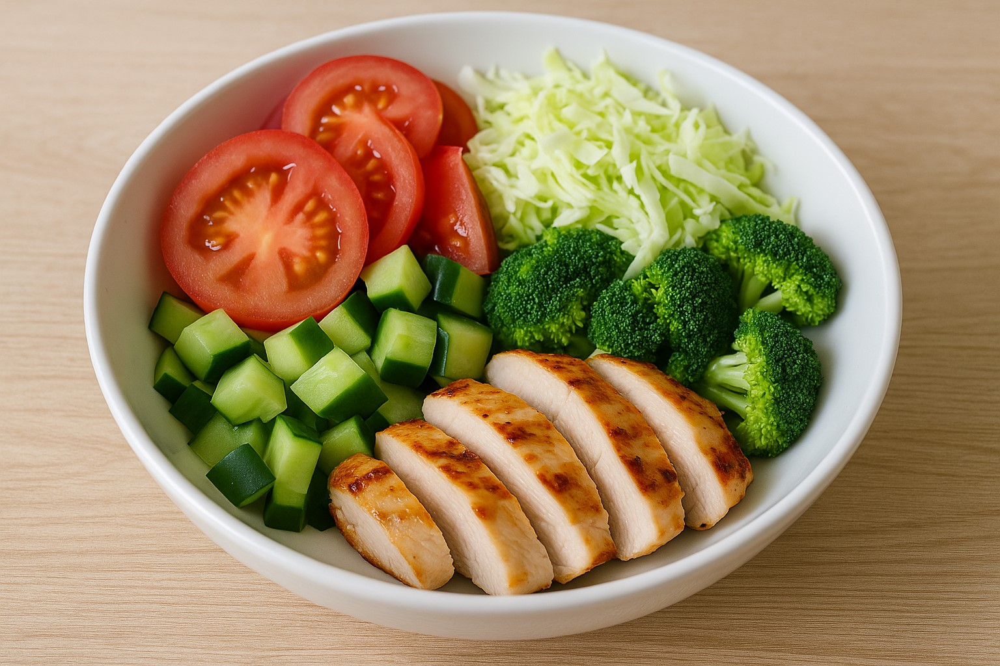

“食べた”を気軽に見える化。
LINEで、毎日のふり返りを。
写真を送るだけ。AIが野菜・たんぱく質・kcalの目安を返信。
※数値は目安です。医療・栄養指導の代替ではありません。
3つの特徴
① 写真→すぐ目安
撮って送るだけ。要約と数値の目安を数秒で返信。
② 共有しやすい
スプレッドシート連携で週次のふり返りが簡単。
③ プライバシー配慮
最小限のデータを安全に扱う方針。削除・エクスポート対応。
使い方
1. 友だち追加
初回に目標や好みを簡単設定。
2. 写真を送る
テキストのみでもOK。AIが要約と目安を返信。
3. OK / 修正
そのまま記録、ズレはボタンで微調整。
4. 週ごとに振り返り
傾向が見えて次の一歩が楽に。
1分デモ
写真を送信 → AIが要約 → 目安を返信 → ワンタップで記録。



※画面は開発中です。仕様は今後変更される場合があります。